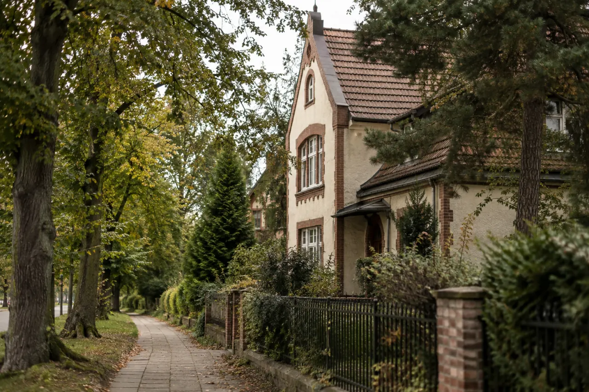
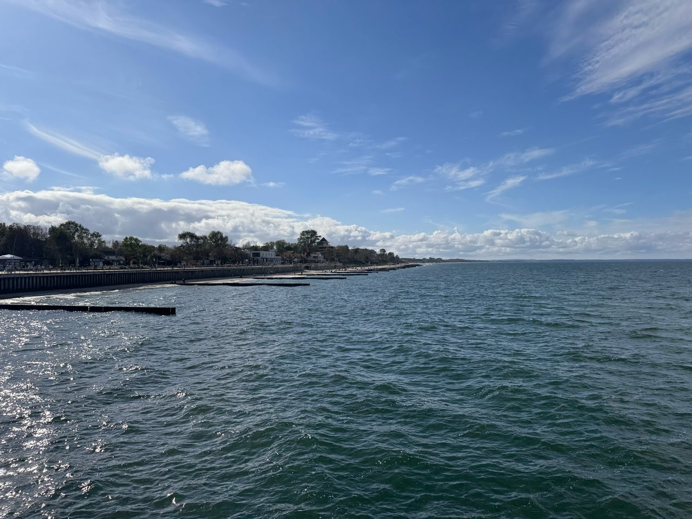
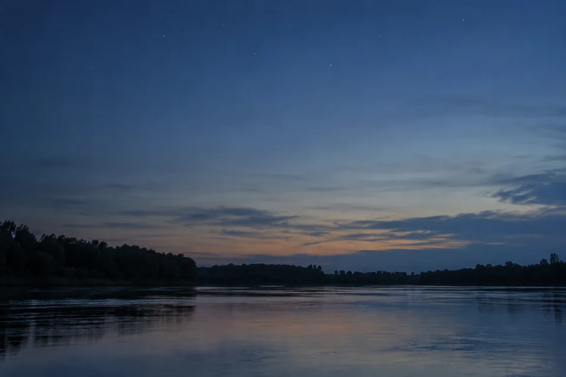
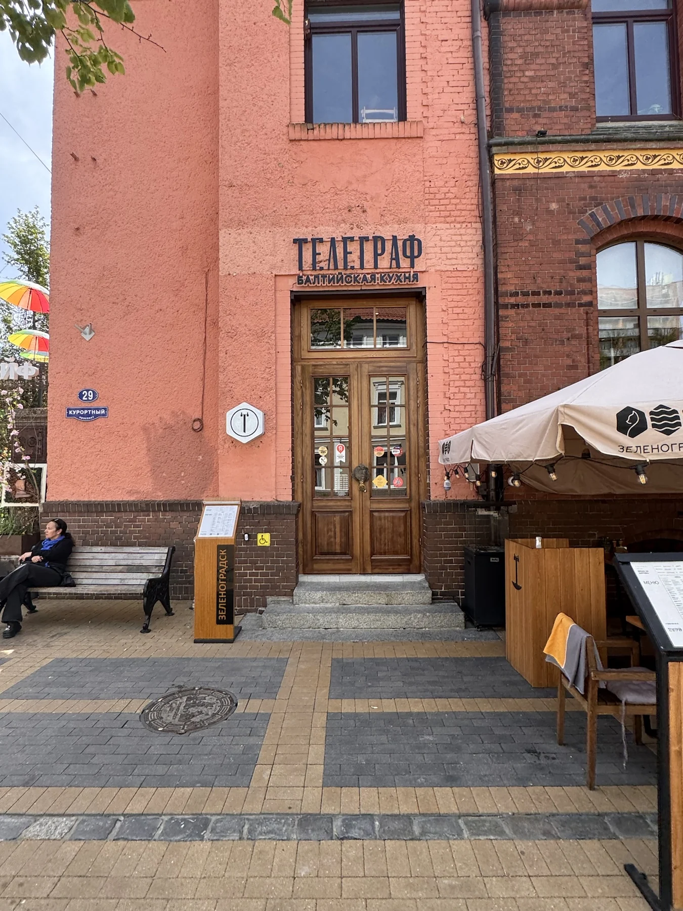

Куршская коса
Высота Эфа: к дюнам и обратно
≈ 1 ч 40 мин1,9 км2 остановки
Дюны и панорама залива. Подъём со ступенями, смотровая и возвращение по разрешённой тропе.
Свет на сайте
Сегодня · Калининград
В режиме «Авто» свет меняется вместе с солнцем.
Начало астрономической ночи для этих суток не рассчитано.
Спланировать вечерБраузер не сохранил выбор. На этой странице режим работает.
Балтийский
характер
рядом
Своими шагами
Выберите прогулку. Остановки, карта пути и PDF уже рядом.
9 пеших прогулок. Время указано на прогулку, без дороги до начала.
Куршская коса
≈ 1 ч 40 мин1,9 км2 остановки
Дюны и панорама залива. Подъём со ступенями, смотровая и возвращение по разрешённой тропе.

Калининград
≈ 2 ч1,6 км5 остановок
Виллы Лео и Шмидт, старые улицы и Центральный парк. Спокойная прогулка по историческому району.

Зеленоградск
≈ 1 ч1,2 км2 остановки
От западной станции к пляжу и обратно к поезду. Пешие подходы и полчаса у моря уже в плане.

Калининград
≈ 3 ч2,3 км6 остановок
Собор, Медовый мост и Рыбная деревня — по набережным к «Витязю». Время в музеях добавьте отдельно.

Калининград
≈ 3 ч4,5 км5 остановок
Королевские и Закхаймские ворота, остров Канта и музейная набережная. История города у реки.

Куршская коса
≈ 1 ч 15 мин1,1 км1 остановка
Кольцевая прогулка среди необычных сосен. Дорога до тропы и поездка к Эфе — отдельно.

Светлогорск
≈ 1 ч 30 мин1,8 км3 остановки
От вокзала к башне и променаду — с возвращением на поезд. Курортные улицы и море.

Балтийск
≈ 1 ч 30 мин2,0 км3 остановки
Вокзал, Музей Балтийского флота и маяк у канала. Переправа на косу в эту прогулку не входит.

Калининград
≈ 1 ч 40 мин2,4 км3 остановки
От памятника космонавтам к судну «Космонавт Виктор Пацаев». Прогулка по городу к воде.
Можно увеличить время прогулки или посмотреть все маршруты.
Показать все прогулки →Дорога — часть дня
Выберите настроение
Один день вокруг того, что вам нравится: море, местная кухня или история города.

Кофе, рыбный обед и десерт. Три места и пешие переходы.
Посмотреть день →От поезда к морю. Короткая прогулка, которую легко продолжить.
Открыть прогулку →Памятник землякам-космонавтам, набережная и научное судно.
Открыть прогулку →У каждого дня свой ритм
Посмотрите остановки по дням. В мастере выберите дату и дорогу — затем сохраните свой план и буклет.
Калининград · пешком
Остров и река, виллы и парк, один музей у воды. Три пеших дня с паузами и возвращением к началу прогулки.
Калининград · Куршская коса
Сначала остров Канта и Преголя. На следующий день — дюны Эфа с дорогой туда и обратно.
Зеленоградск · Куршская коса
Первый день — курхаус, вода и променад. Второй — автобус к дюнам Эфа и возвращение в Зеленоградск.
Калининград · Куршская коса · Светлогорск
Остров Канта и Преголя, дюны Эфа, затем Светлогорск. На каждый день — своя дорога и возвращение.
Зеленоградск · пешком
Старые улочки, рыбная кухня и время у моря. Две прогулки с остановками на обед и личным PDF.
Остров Канта и набережные → Зеленоградск → Танцующий лес и Эфа.
На Куршскую косу — на машине
Набережные → Амалиенау → Зеленоградск → Танцующий лес и Эфа → Королевский бор и Лесной.
На Куршскую косу — на машине
К пяти дням добавлены гастропрогулка по Зеленоградску и городские ворота Калининграда.
На Куршскую косу — на машине
Ваш сохранённый день всегда рядом.
Открыть Мой день →Обновлено 4 октября 2026 года.